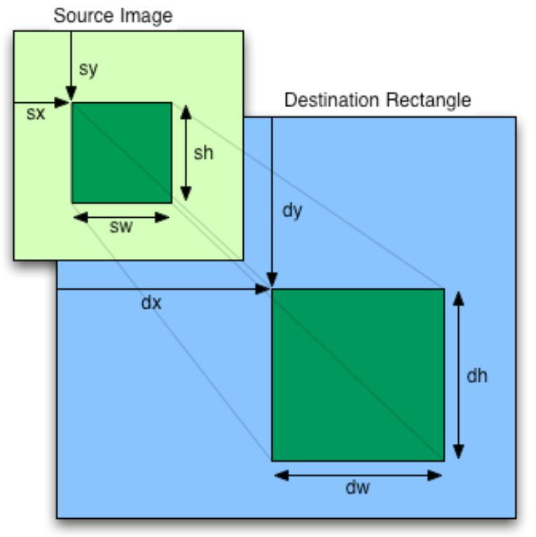

如果想要有個可捲動的背景，有多種的設計方式，例如，若有張 100x100 的圖片如下：
如果圖片繪製時超過畫布大小，那麼每次就只能看到圖片的一部份，藉由調整圖片繪製的左上起點，就會有捲動的效果，例如以下範例可以用鍵盤的 a、d、w、s 進行左、右、上、下的背景捲動：
在 p5.js 中，keyIsDown 可以用來測試某鍵是否按下，那麼怎麼得知號碼對應哪個鍵？在 keycode.info 直接按下某鍵，就會顯示對應的號碼了。
上面的範例只是故意將 100x100 的圖畫成 500x500 的大小，這種做法的缺點是，如果背景範圍很大，檔案就會很大，如果你的背景，可以接受拼接小圖來構成的話，就不會有這個問題，例如：
以上兩個範例都限制了背景可以移動的範圍，有時會希望能有無限捲動的效果，這可以透過 image 的額外參數來達成，在其 API 文件中有列出了這麼一張圖：

簡單來說，你可以藉由指定來源圖片的左上座標起點與寬高，決定要繪製來源圖片的哪個部份，就像是裁剪圖片。例如，若要無限橫向捲軸的話，可以如下：
藉由 a、d 鍵，你可以無限地橫向捲動背景，簡單來說，就是先畫 x 左邊，再將不足的部份用 x 右邊的圖片來補；直向捲動也是類似做法，若要能做到支援橫向與直向也是可以，只是需要補的來源會有三塊，你可以自己試試看。
圖片本身若有透明背景，繪製時也會是透明的，你可以設計不同的背景圖片，例如樹與山，讓樹的橫向捲動快些，山的橫向捲動慢些，就能營造出移動時近樹遠山的距離感。